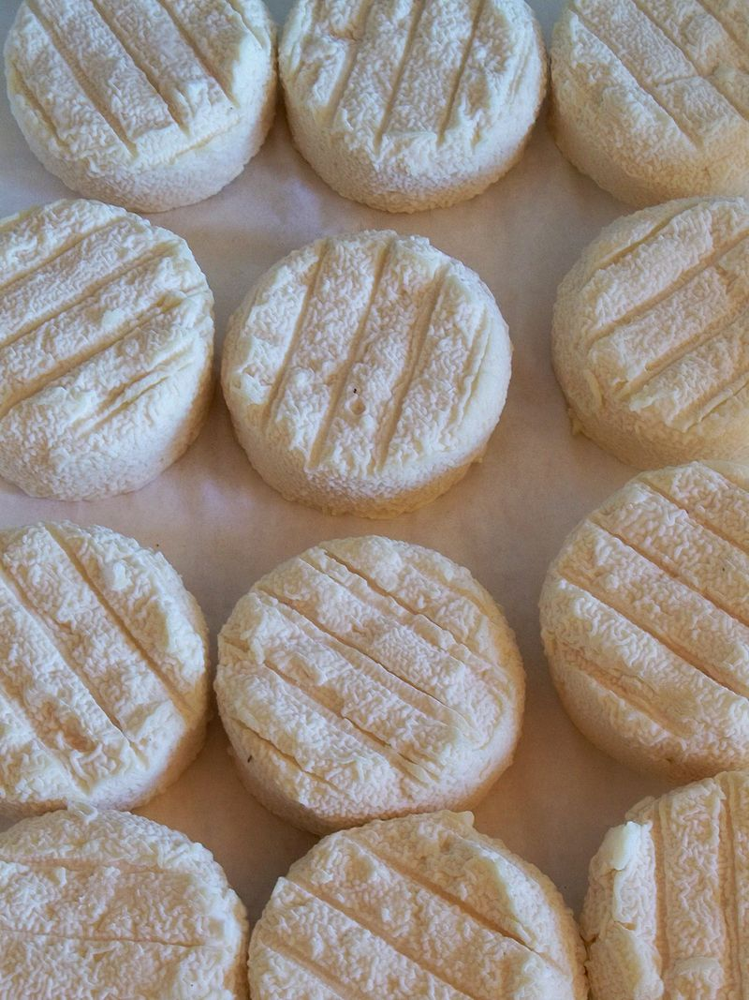

Le lait de chèvre est aussi utilisé pour fabriquer des fromages très populaires comme le cabécou et la féta, bien qu'il puisse aussi être transformé en n'importe quel type de fromage.
On appelle souvent le fromage de chèvre simplement « chèvre ».
Il existe une grande variété de fromages au lait de chèvre.
La France est le premier pays producteur de fromages de chèvre au monde.
La composition du lait de chèvre en acides gras spécifiques contribue au goût caractéristique de ce type de fromage, notamment les acides gras à chaînes moyennes : acide caproïque, acide caprylique et acide caprique.
Ces acides gras tirent leur nom de capra (chèvre en latin) et constituent environ 15 % des acides gras dans le lait de chèvre.
Dans les pays d'élevage de chèvres, de nombreuses sortes de fromage de chèvre sont fabriquées : fromages frais ou affinés, secs, au raisin, accompagnés d'herbes aromatiques diverses ou d'épices, de miel, conservés par la cendre, par un bain d'huile ou d'alcool.
Mais le terroir est aussi essentiel.
Les fromages de chèvre se consomment frais ou affinés plus ou moins longtemps, accompagnant les salades ou chauds sur du pain comme dans le cas de la salade de chèvre chaud ou également relevés de confitures de fruits.
Très affinés, ils peuvent devenir secs et leur pâte cassante, se délitant en strates comme des ardoises.

|
 |